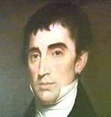

by
Stefan Bielinski
John Lansing, Jr. was born in 1754 the eldest son of Gerrit J. Lansing and Jane Waters. Coming of age at the outbeak of hostilities with the British, his rise was more accelerated than it might have been during more peaceful times.
As a teenager, he clerked in the law office of Robert Yates. He also may have clerked for James Duane in New York City. In 1775, he was admitted to practice law. However, a budding career was cut short by the outbreak of war. Commissioned an ensign in the Continental army, in 1776, he served as military secretary to General Philip Schuyler. In the years that followed, he continued to serve the American cause - but in civil capacities - following his patrons, the Yateses, in the politcal revolution and then into the new State government.
Lansing was elected to the New York State Assembly at age twenty-six. He served in the legislature in 1780-84, 1786, and 1788-89. In 1786 and 1789, he was Assembly speaker. In 1786, he was appointed mayor of Albany - serving at City Hall until 1790.
In 1787, Mayor Lansing was sent with Robert Yates and Alexander Hamilton to represent New York at the Constitutional Convention in Philadelphia. Unsure of their mandate to participate in the drafting of an entirely new form of government, Yates and Lansing returned home after a month. A contemporary provides us with a capsule of his personality. Like Yates, he later wrote a history of the proceedings. At that time, he was still serving as mayor and also building a large, new home that would become a Market Street landmark. In 1800, his household included seven children and three slaves.
John Lansing, Jr. had married Manhattan refugee Cornelia Ray in 1781. Their ten children were born between 1783 and 1800. However, neither of his sons lived to raise a family.
Although his family and career was based in Albany and New York, Lansing used his status and connections to acquire considerable lands across the river and deep into the Schoharie Valley - where he built a country seat for his daughter and son-in-law in 1819 called "Lansing Manor."
He served on the New York State Supreme Court from 1790 to 1801 - the last year as chief justice following the death of Robert Yates. In 1801, he was appointed chancellor of New York State. He held that office until 1814 when he reached the mandatory retirement age of sixty! In retirement, he continued to serve a lucritive legal clientele. In 1817 he was appointed a regent of the University of the State of New York. As late as 1824, he unsuccessfully ran for mayor of Albany.
Primarily an officeholder and attorney, Chancellor Lansing was involved in numerous and diverse civic ventures including the Albany Library, Albany Waterworks, Albany and Deleware Turnpike Company, Albany Academy, the Albany Lancaster School,
On the evening of December 12, 1829, he left his Manhattan hotel reportedly to mail a letter. He never was seen again. Chancellor Lansing was 75 years old and was presumed drowned or murdered. A cenotaph (empty tomb) was erected at Albany Rural Cemetery. His widow died in 1834.
 Sources: The life of John Lansing, Jr. is CAP biography
number 3755. This profile is derived chiefly from family
and community-based resources. The
son of Gerrit Lansing, he was called "Junior" to prevent confusion
with at least one other John G. Lansing. A number of biographical profiles
appear online.
Sources: The life of John Lansing, Jr. is CAP biography
number 3755. This profile is derived chiefly from family
and community-based resources. The
son of Gerrit Lansing, he was called "Junior" to prevent confusion
with at least one other John G. Lansing. A number of biographical profiles
appear online.
Chancellor Lansing commissioned several portraits. This one from the earlier part of his career appeared unattributed on an Internet website. Unfortunately, that page has vanished!
That work is most accessible in The Delegate From New York or Proceedings of the Federal Convention of 1787, (from the notes of John Lansing, Jr.), edited by Joseph Reese Strayer (Princeton, NJ, 1939).
Portrait in the collection of Union College.
first posted: 4/4/00; last revised 9/5/02